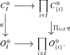
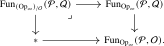

A commutative monoid in an \(\infty \)-category \(D\) with finite products can be described by a finite-product-preserving functor \(\Span (\Fin )\to D\). Replacing \(\Span (\Fin )\) by the total category \(\Oo ^{\otimes }\) of an \(\infty \)-operad lets us describe objects of \(D\) equipped with the operations specified by \(\Oo \). Such a functor assigns an object \(A_x\) to each color \(x\), sends a tuple of colors to the product of the corresponding objects, and sends a multimorphism \(\{x_i\}_{i\in I}\to y\) to a map \[ \prod _{i\in I}A_{x_i}\longrightarrow A_y. \] Functoriality expresses compatibility with identities and substitution. This leads to the following definition.
Definition 14.6.1. Let \(D\) be an \(\infty \)-category with finite products. An \(\Oo \)-monoid in \(D\) is a finite-product-preserving functor \(\Oo ^{\otimes } \to D\). We write \[ \Mon _{\Oo }(D) \quad := \quad \Fun ^{\times }(\Oo ^{\otimes },D) \quad \subseteq \quad \Fun (\Oo ^{\otimes }, D) \] for the full subcategory of \(\Oo \)-monoids in \(D\).
When \(D\) is equipped with its cartesian monoidal structure, \(\Oo \)-monoids in \(D\) will be identified with \(\Oo \)-algebras in Theorem 15.3.11.
Definition 14.6.2. An \(\Oo \)-monoidal \(\infty \)-category is an \(\Oo \)-monoid in \(\Cat _{\infty }\). For \(\Oo =\Comm \), this recovers the definition of a symmetric monoidal \(\infty \)-category. When \(\Oo = \Assoc \), we refer to \(\Oo \)-monoidal \(\infty \)-categories simply as monoidal \(\infty \)-categories.
Concretely, an \(\Oo \)-monoidal \(\infty \)-category assigns an \(\infty \)-category \(C_x\) to each color \(x\) and a functor \(\prod _{i\in I}C_{x_i}\to C_y\) to each multimorphism \(\{x_i\}_{i\in I}\to y\), compatibly with identities and substitution. An \(\Oo \)-monoidal functor is a natural transformation between the corresponding finite-product-preserving functors \(\Oo ^{\otimes }\to \Cat _{\infty }\).
Example 14.6.3. When \(\Oo = \Triv \), an \(\Oo \)-monoidal \(\infty \)-category is just an \(\infty \)-category.
The multimorphism operad functor \(\Mm \colon \Cat _{\infty }^{\otimes } \to \Op _{\infty }\) admits an analogue \(\Mm _{-/\Oo }\colon \Mon _{\Oo }(\Cat _{\infty }) \to (\Op _{\infty })_{/\Oo }\) for \(\Oo \)-monoidal \(\infty \)-categories. This relies on the following relative analogue of Lemma 14.4.4.
Lemma 14.6.4. Let \(\Oo \) be an \(\infty \)-operad and let \(q\colon C^{\otimes } \to \Oo ^{\otimes }\) be a cocartesian fibration. Then the composite \[ C^{\otimes } \xrightarrow {q} \Oo ^{\otimes } \xrightarrow {p_{\Oo }} \Span (\Fin ) \] exhibits \(C^{\otimes }\) as an \(\infty \)-operad if and only if the functor \(\Str ^{\cc }(q)\colon \Oo ^{\otimes } \to \Cat _{\infty }\) preserves finite products. In this case, the morphism \(q\colon C^{\otimes } \to \Oo ^{\otimes }\) is automatically a morphism of \(\infty \)-operads.
Proof. Write \(F:=\Str ^{\cc }(q)\). Condition (i) of Proposition 14.1.12 holds for \(p_{\Oo }q\): first lift a backwards span along \(p_{\Oo }\) and then lift the resulting morphism along \(q\). Pasting the cocartesian universal properties shows that this gives a \((p_{\Oo }q)\)-cocartesian lift.
For every finite set \(I\), transport along the inert projections gives a square

The bottom functor is an equivalence, so condition (ii) holds precisely when this square is a pullback. Checking on fibers reduces this to requiring that \(F(o)\to \prod _{i\in I}F(o_i)\) be an equivalence for every tuple \(o=\{o_i\}_{i\in I}\). Since products in \(\Oo ^{\otimes }\) concatenate tuples, this is equivalent to \(F\) preserving finite products.
Assume these conditions hold, and let \(X\to X_i\) be the \(q\)-cocartesian lifts of the projections \(\rho _i\colon o\to o_i\). For any \(Y\) over \(o'\), the canonical map \(\Hom _{C^{\otimes }}(Y,X)\to \prod _i\Hom _{C^{\otimes }}(Y,X_i)\) lies over the isomorphism \(\Hom _{\Oo ^{\otimes }}(o',o)\iso \prod _i\Hom _{\Oo ^{\otimes }}(o',o_i)\). Its fiber at \(\beta \colon o'\to o\) identifies with \[ \Hom _{F(o)}(\beta _!Y,X)\longrightarrow \prod _i\Hom _{F(o_i)}((\rho _i\beta )_!Y,X_i), \] which is an isomorphism because \(F(o)\simeq \prod _iF(o_i)\). Thus \(X\simeq \prod _iX_i\), proving condition (iii). These products, and hence all finite products obtained by concatenating tuples, are preserved by \(q\). Therefore \(q\) is a morphism of \(\infty \)-operads. □
Definition 14.6.5. Given an \(\Oo \)-monoidal \(\infty \)-category \(C\), we let \(p_C\colon C^{\otimes } \to \Oo ^{\otimes }\) denote its cocartesian unstraightening, which by the lemma defines an \(\infty \)-operad \(\Mm _{C/\Oo } = (C^{\otimes },p_{\Oo } \circ p_C)\). Since \(p_C\) is a morphism of \(\infty \)-operads, it turns \(\Mm _{C/\Oo }\) into an object of the slice category \((\Op _{\infty })_{/\Oo }\), producing a functor \[ \Mm _{-/\Oo }\colon \Mon _{\Oo }(\Cat _{\infty }) \to (\Op _{\infty })_{/\Oo }. \]
If \(\Pp \to \Oo \) and \(\Qq \to \Oo \) are two \(\infty \)-operads over \(\Oo \), we denote by \(\Fun _{(\Op _{\infty })_{/\Oo }}(\Pp ,\Qq )\) the \(\infty \)-category of operad maps \(\Pp \to \Qq \) over \(\Oo \), defined as the following fiber:

Definition 14.6.6. Let \(C\) be an \(\Oo \)-monoidal \(\infty \)-category and let \(\Pp \to \Oo \) be a morphism of \(\infty \)-operads. The \(\infty \)-category of \(\Pp /\Oo \)-algebras in \(C\) is \[ \Alg _{\Pp /\Oo }(C) := \Fun _{(\Op _{\infty })_{/\Oo }}(\Pp ,\Mm _{C/\Oo }). \] For a fixed map \(\Pp \to \Assoc \), we usually abbreviate \(\Alg _{\Pp /\Assoc }(C)\) to \(\Alg _{\Pp }(C)\). For the identity map of \(\Assoc \), we write \(\Alg (C)\).
If \(C\) is symmetric monoidal and \(\Pp \to \Comm \) is an \(\infty \)-operad over \(\Comm \), then this relative definition agrees with the earlier one: \[ \Alg _{\Pp /\Comm }(C)\simeq \Alg _{\Pp }(C). \] Indeed, \(\Comm \) is terminal in \(\Op _{\infty }\), so passing to the slice over \(\Comm \) imposes no additional condition on operad maps.
Definition 14.6.7. Given \(\Oo \)-monoidal \(\infty \)-categories \(C\) and \(D\), a lax \(\Oo \)-monoidal functor \(C \to D\) is an operad morphism \(\Mm _{C/\Oo } \to \Mm _{D/\Oo }\) over \(\Oo ^{\otimes }\).
Under unstraightening, \(\Oo \)-monoidal functors correspond to functors over \(\Oo ^{\otimes }\) that preserve cocartesian morphisms. In particular, they are lax \(\Oo \)-monoidal. We sometimes call them strong to distinguish them from lax functors.
Proposition 14.6.8 (cf. [Lurie (2017), Corollary 7.3.2.7]). Let \(L\colon C\to D\) be an \(\Oo \)-monoidal functor such that each \(L_x\colon C_x\to D_x\) admits a right adjoint \(R_x\). Then the \(R_x\) extend to a lax \(\Oo \)-monoidal functor \(R\) for which \(L^{\otimes }\dashv R^{\otimes }\) is a relative adjunction over \(\Oo ^{\otimes }\).
Proof. For a tuple \(\{y_i\}_{i\in I}\), the product of the adjunctions \(L_{y_i}\dashv R_{y_i}\) gives a right adjoint on the corresponding fiber. For a morphism \(\beta \colon \{x_j\}_{j\in J}\to \{y_i\}_{i\in I}\) in \(\Oo ^{\otimes }\), preservation of cocartesian morphisms by \(L^{\otimes }\) and these fiberwise adjunctions identify \[ \Hom _{D^{\otimes }}^{\beta }(L^{\otimes }\{c_j\},\{d_i\}) \simeq \Hom _{C^{\otimes }}^{\beta }(\{c_j\},\{R_{y_i}d_i\}). \] Thus the fiberwise counits exhibit \(\{R_{y_i}d_i\}\) as the value of a right adjoint to \(L^{\otimes }\). As in Proposition 14.5.6, the counit gives its structure over \(\Oo ^{\otimes }\) and makes the adjunction relative. Since \(R^{\otimes }\) is a right adjoint, it preserves finite products and hence is a morphism of \(\infty \)-operads. □
Conversely, let \(R\colon D\to C\) be lax \(\Oo \)-monoidal, and suppose each \(R_x\) admits a left adjoint \(L_x\). For a multimorphism \(\alpha \colon \{x_i\}_{i\in I}\to y\), write \(\alpha _!^C\) and \(\alpha _!^D\) for the corresponding operations in \(C\) and \(D\). The units of the adjunctions and the lax structure of \(R\) give a transformation \[ \alpha _!^C\longrightarrow \alpha _!^C\circ \prod _i(R_{x_i}L_{x_i})\longrightarrow R_y\alpha _!^D\circ \prod _iL_{x_i}. \] Its adjoint is the canonical transformation \begin {equation} \label {eq:O_Monoidal_Left_Adjoint_Structure} L_y\alpha _!^C\longrightarrow \alpha _!^D\circ \prod _iL_{x_i}. \end {equation}
Proposition 14.6.9 (cf. [Lurie (2017), Corollary 7.3.2.12]). Let \(R\colon D\to C\) be a lax \(\Oo \)-monoidal functor such that each \(R_x\) admits a left adjoint \(L_x\). If the map in (14.2) is an isomorphism for every multimorphism of \(\Oo \), then the \(L_x\) extend to an \(\Oo \)-monoidal functor \(L\) for which \(L^{\otimes }\dashv R^{\otimes }\) is a relative adjunction over \(\Oo ^{\otimes }\).
Proof. For an arbitrary morphism \(\beta \colon \{x_i\}_{i\in I}\to \{y_j\}_{j\in J}\) of \(\Oo ^{\otimes }\), the analogous transformation \[ \Bigl (\prod _jL_{y_j}\Bigr )\beta _!^C\longrightarrow \beta _!^D\Bigl (\prod _iL_{x_i}\Bigr ) \] is an isomorphism: after projecting to each output, it is the transformation for the corresponding multimorphism, by Lemma 14.1.10. Consequently the fiberwise units induce isomorphisms \[ \Hom _{D^{\otimes }}^{\beta }(\{L_{x_i}c_i\},\{d_j\}) \simeq \Hom _{C^{\otimes }}^{\beta }(\{c_i\},R^{\otimes }\{d_j\}). \] They therefore exhibit \(\{L_{x_i}c_i\}\) as the value of a left adjoint to \(R^{\otimes }\), with a relative adjunction over \(\Oo ^{\otimes }\). The argument of Proposition 14.5.11 identifies the maps expressing preservation of cocartesian morphisms with the inverses of the displayed transformations. Thus \(L^{\otimes }\) preserves cocartesian morphisms and defines an \(\Oo \)-monoidal functor. □
The limit result for algebras also admits the following relative form.
Proposition 14.6.10 (cf. [Lurie (2017), Corollary 3.2.2.5]). Let \(q\colon \Pp \to \Oo \) be a morphism of \(\infty \)-operads, let \(C\) be an \(\Oo \)-monoidal \(\infty \)-category, and let \(I\) be a small \(\infty \)-category. Assume that each fiber \(C_x\), for \(x\in \Oo ^{\simeq }\), admits \(I\)-indexed limits. Then \(\Alg _{\Pp /\Oo }(C)\) admits \(I\)-indexed limits, and the evaluation functors \[ \ev _y\colon \Alg _{\Pp /\Oo }(C)\to C_{q(y)}, \qquad A\mapsto A_y \qquad (y\in \Pp ^{\simeq }), \] jointly create them.
Proof. The proof is analogous to that of Proposition 14.5.10. Applying \(\Fun (I,-)\) fiberwise gives an \(\Oo \)-monoidal \(\infty \)-category whose fiber at \(x\) is \(\Fun (I,C_x)\), and algebras in it identify with \(I\)-diagrams in \(\Alg _{\Pp /\Oo }(C)\). The fiberwise constant-diagram functors form an \(\Oo \)-monoidal functor, with lax \(\Oo \)-monoidal right adjoint given in each fiber by \(\lim _I\). By Proposition 14.6.8, these functors form a relative adjunction over \(\Oo ^{\otimes }\), so Lemma 14.5.5 gives the required right adjoint to the constant-diagram functor after applying \(\Fun _{/\Oo ^{\otimes }}(\Pp ^{\otimes },-)\) and restricting to operad maps. Its evaluation at \(y\) is \(\lim _I\) in \(C_{q(y)}\). The evaluation functors jointly detect isomorphisms, so they jointly create the limits. □
Corollary 14.6.11. Let \(C\) be a monoidal \(\infty \)-category and let \(I\) be a small \(\infty \)-category such that \(C\) admits \(I\)-indexed limits. Then \(\Alg (C)\) admits \(I\)-indexed limits, and the forgetful functor \(\Alg (C)\to C\) creates and preserves them. The same holds for the forgetful functor \(\CAlg (C)\to C\) when \(C\) is symmetric monoidal.
Proof. This is the one-color case of Proposition 14.6.10: a monoidal \(\infty \)-category is an \(\Assoc \)-monoidal \(\infty \)-category, with \(\Alg (C)=\Alg _{\Assoc /\Assoc }(C)\), and a symmetric monoidal \(\infty \)-category is a \(\Comm \)-monoidal \(\infty \)-category, with \(\CAlg (C)=\Alg _{\Comm /\Comm }(C)\). □
Corollary 14.6.12. Let \(C\) be a monoidal \(\infty \)-category with a terminal object \(T\). Then \(T\) carries a unique associative algebra structure, and it is terminal in \(\Alg (C)\). When \(C\) is symmetric monoidal, the same holds for the commutative algebra structure and \(\CAlg (C)\).
Proof. By Corollary 14.6.11, the empty diagram has a terminal algebra whose underlying object is \(T\). Any algebra with underlying object \(T\) maps isomorphically to this terminal algebra, since the forgetful functor detects isomorphisms. Hence the anima of algebra structures on \(T\) is contractible. The commutative case is identical. □